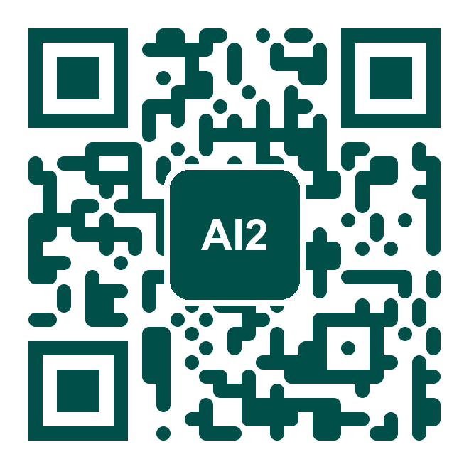
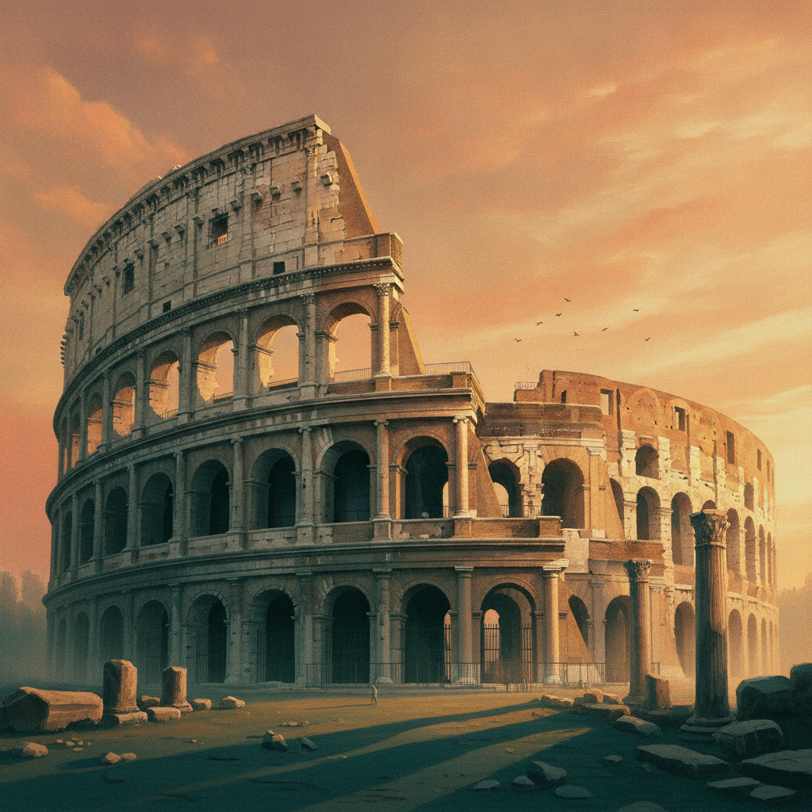
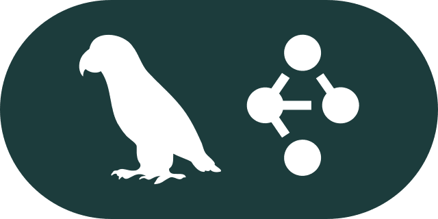
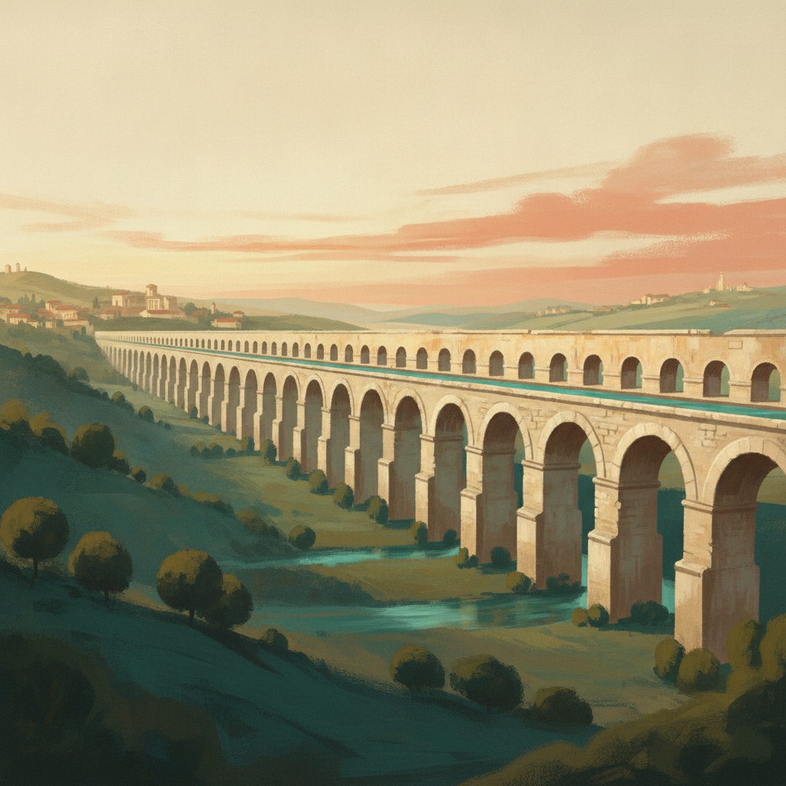
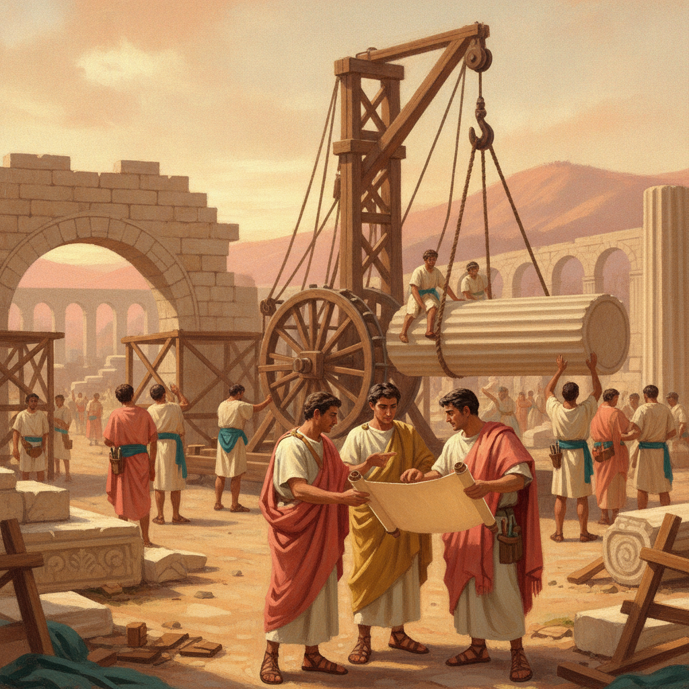
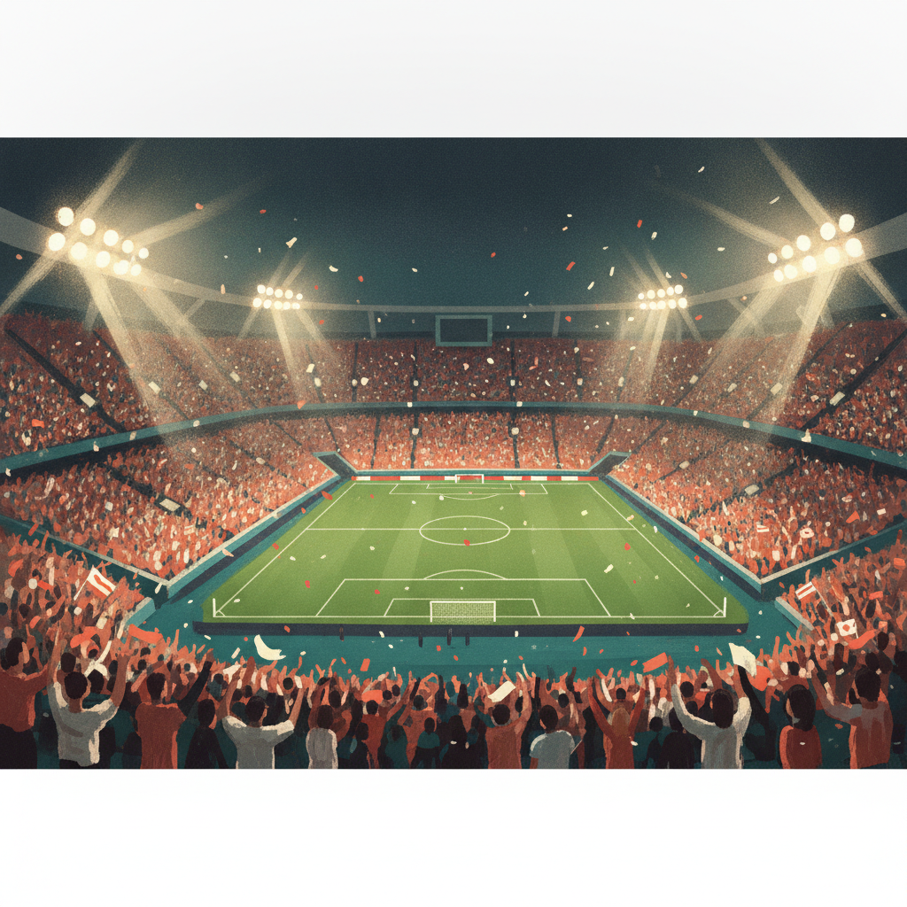

01
Agentic AI
From single agents to coordinated systems.
A hands-on tour of agentic AI frameworks



From single agents to coordinated systems.
The patterns you just saw, now in code. We build with all three today.
From Graph to Crew · a hands-on tour of each comes next.

Two philosophies of control: a graph you draw, and a crew you assemble.
If your task is a straight line, a chain is enough. When you need control, you reach for a graph.
If you can draw the flowchart, you can build the graph.
If you can write the job descriptions, you can build the crew.
| LangGraph | CrewAI | |
|---|---|---|
| Think in | nodes, edges, state | agents, tasks, process |
| Best for | branching, loops, human-in-the-loop, strict reliability | quick teams, role decomposition |
| Learning curve | steeper | gentler |

One World Cup task, two architectures, live in a Colab notebook.

Italy vs Brazil. Build a match scouting report twice: once as a Crew, once as a Graph.
Input: two teams, for example Italy vs Brazil. Output: a scouting report.
Build the same task twice: once with CrewAI, once with LangGraph. Same goal, two architectures, and the contrast is clear.
Caption: the graph makes the loop explicit. The crew hides it inside the process.
"Now go build one."
Contact: m.dehghani@northeastern.edu